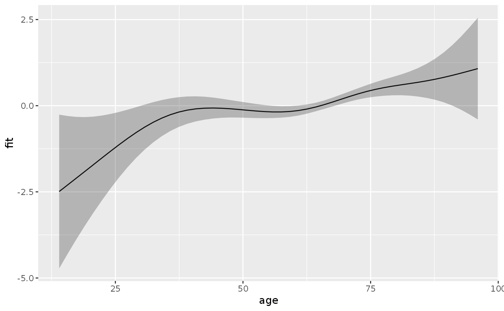
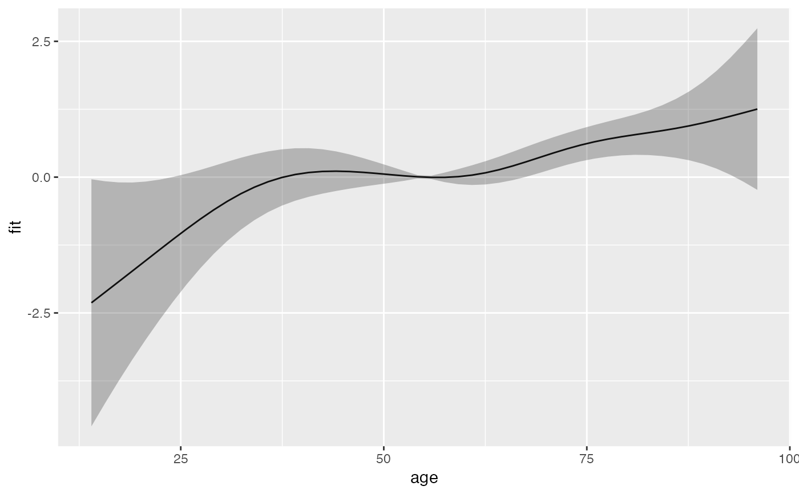

R/add-functions.R
add_term.RdAdds the contribution of a specific term to the
linear predictor to the data specified by newdata.
Essentially a wrapper to predict.gam, with type="terms".
Thus most arguments and their documentation below is from predict.gam.
add_term(newdata, object, term, reference = NULL, ci = TRUE, se_mult = 2, ...)A data frame or list containing the values of the model covariates at which predictions
are required. If this is not provided then predictions corresponding to the
original data are returned. If newdata is provided then
it should contain all the variables needed for prediction: a
warning is generated if not. See details for use with link{linear.functional.terms}.
a fitted gam object as produced by gam().
A character (vector) or regular expression indicating for which term(s) information should be extracted and added to data set.
A data frame with number of rows equal to nrow(newdata) or
one, or a named list with (partial) covariate specifications. See examples.
logical. Indicates if confidence intervals should be
calculated. Defaults to TRUE.
The factor by which standard errors are multiplied to form confidence intervals.
Further arguments passed to predict.gam
library(ggplot2)
ped <- as_ped(tumor, Surv(days, status)~ age, cut = seq(0, 2000, by = 100))
pam <- mgcv::gam(ped_status ~ s(tend) + s(age), family = poisson(),
offset = offset, data = ped)
#term contribution for sequence of ages
s_age <- ped %>% make_newdata(age = seq_range(age, 50)) %>%
add_term(pam, term = "age")
ggplot(s_age, aes(x = age, y = fit)) + geom_line() +
geom_ribbon(aes(ymin = ci_lower, ymax = ci_upper), alpha = .3)

# term contribution relative to mean age
s_age2 <- ped %>% make_newdata(age = seq_range(age, 50)) %>%
add_term(pam, term = "age", reference = list(age = mean(.$age)))
ggplot(s_age2, aes(x = age, y = fit)) + geom_line() +
geom_ribbon(aes(ymin = ci_lower, ymax = ci_upper), alpha = .3)
